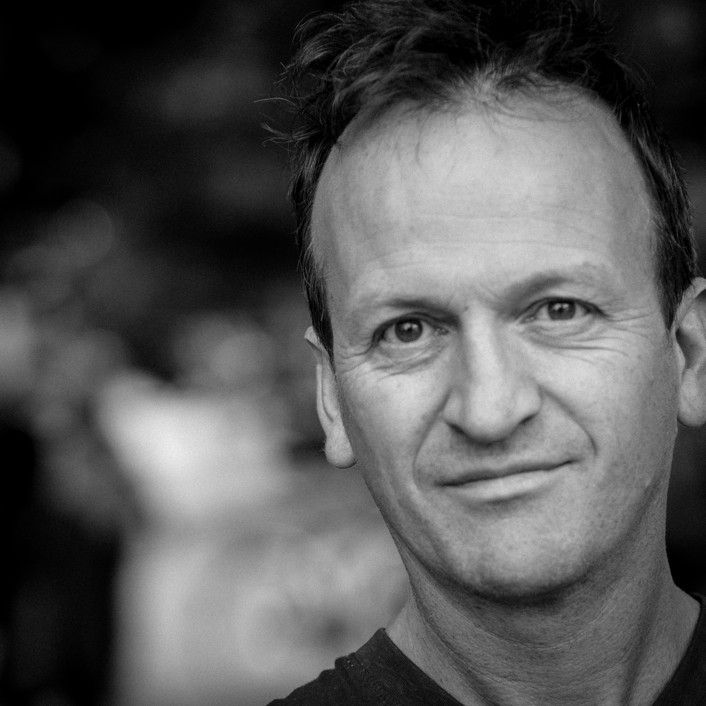

Dirk P. Haubrich was born in 1966 in Saarbrücken, Germany. During a 4 year residence in London he studied composition and improvisation with Phillip Wachsmann. Dirk P. Haubrich moved to The Hague, the Netherlands, to study at the Royal Conservatory ‘Sonology’, electronic music composition study. His love for dance and stage elaborated while working with the Frankfurt Ballet and Billy Forsythe in Eidos-Telos. In the field of dance Haubrich worked closely with Jirí Kylián, Krisztina de Châtel, Bruno Listopad and Megumi Nakamura . He premiered his pieces in various theaters around the world. Currently he lives in Berlin, Germany.
